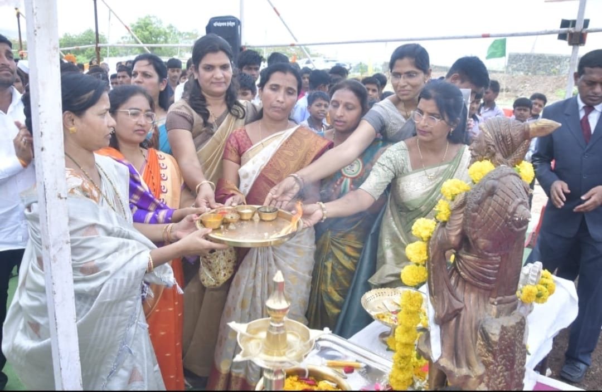
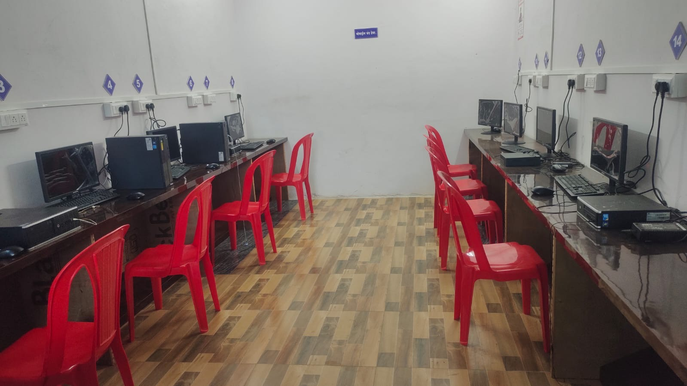
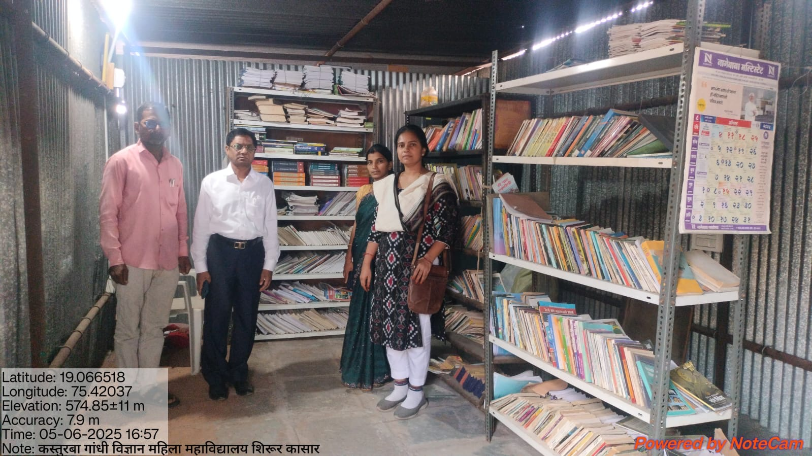
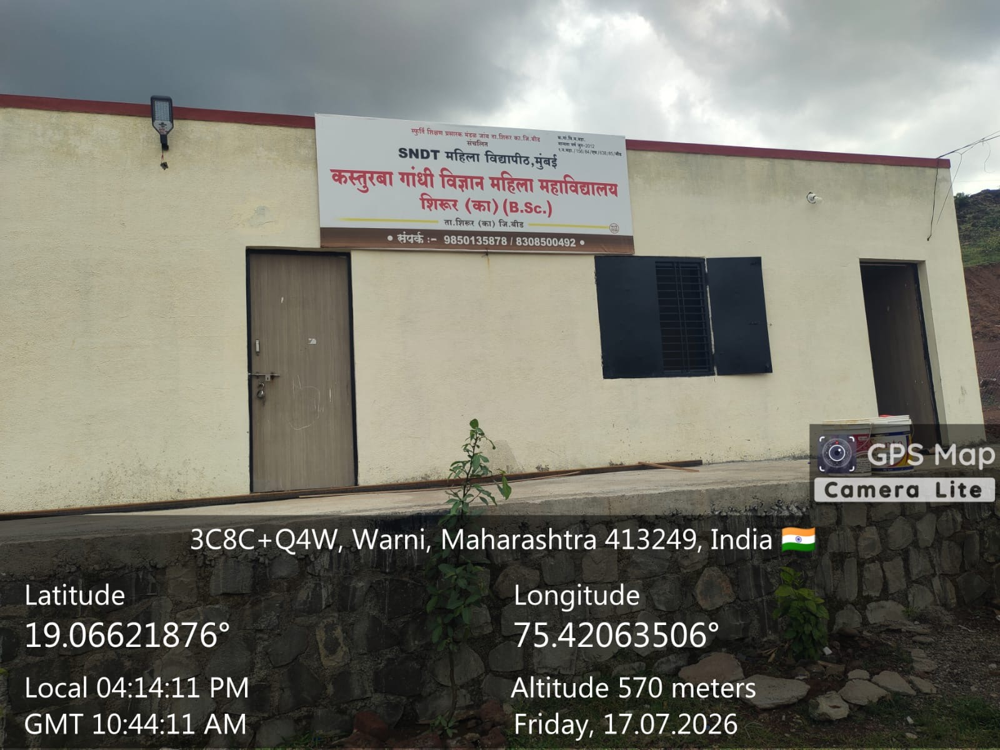

Learn. Lead. Inspire.
A place where women shape tomorrow
Building confidence, curiosity and capability through an inclusive science education.

Building confidence, curiosity and capability through an inclusive science education.

Practical learning spaces designed to help every student explore, question and grow.

A student-focused environment with academic guidance, library resources and opportunity.
Kasturba Gandhi Science Women’s College is committed to making quality higher education accessible to women in Shirur and the surrounding region.
We nurture scientific thinking, confidence and community-minded leadership in an environment where every student is encouraged to participate and progress.
Read our story ↗A focused undergraduate science programme with a foundation in practical and analytical learning.
A safe, encouraging environment where students develop academic confidence and leadership skills.
Learning shaped by local context, social responsibility and opportunities beyond the classroom.

Our B.Sc. programme combines conceptual learning with practical application, helping students prepare for further studies and varied career pathways.
Digital access and guided computer practice.
Learning resources for study and exploration.
A vibrant calendar of cultural and social events.
Important information for applicants, students and families—all in one place.
View all notices →Discover an education built around your potential.
Apply for admission →Talk to us